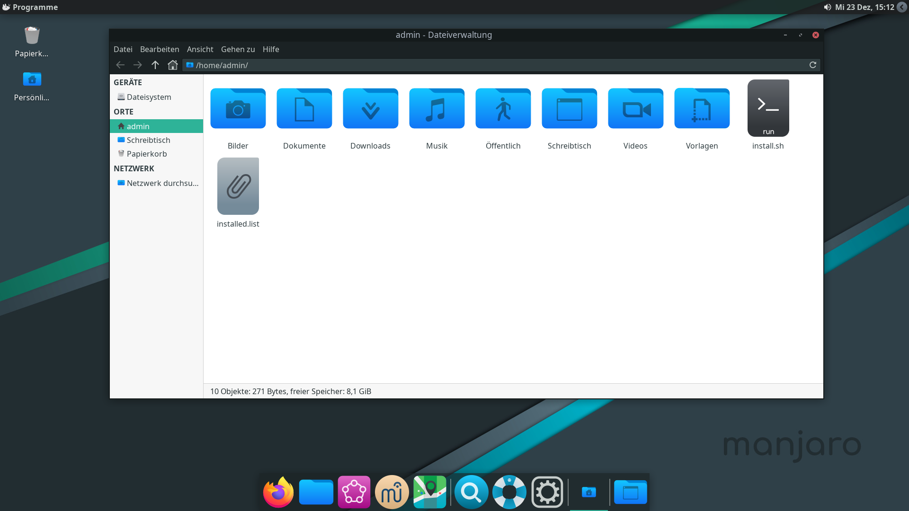

So arbeitest du mit Dateien
- So kannst du den Dateimanager starten:
- Über die Appleiste: klicke auf das Ordner-Symbol
- Über das Menü: Öffne das Appsmenü (oben links) und klicke dort auf "Dateiverwaltung"
- Über "Orte": falls du schon weißt, welchen Ordner du öffnen möchtest, kannst du diesen über das Dateien-Menü (rechts neben dem Appsmenü), auswählen
- Über die Appsuche: Drücke Supertaste und R und beginne zu tippen: "Dateiverwaltung"/"Thunar". Wenn der richtige Eintrag erscheint, drücke Enter
- So sieht der Dateimanager aus:

- Hier kannst du durch die Ordner navigieren und die gewünschte Datei finden